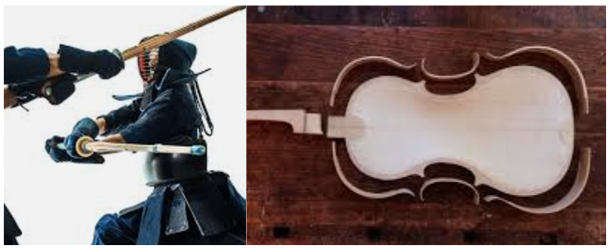

Life

- Love travelling
- Played Kendo | Swimming | Tennis
- Play the Piano | Love music
- Made violins and base guitar
- Used to have a routine life : same cafes and restaurants everyday to save time
- Do not like make decision for daily living : eating same meals
When I was young, I believed that I can fly, just like a superman. I wore my leggings then underwear, put the capes. Proudly, I jumped off from the balcony.
My childhood has been FANTASTIC.
Before meeting my partner, I had very simple life to save my 24 hours a day.
Everyday same meals at the same restaurants. Even I did not have to order, the restaurants knew what I want.
To save time, I did not cook, no dishes to clean.
I love reading books (used to read 2 books weekly + 3 major newspapers everyday).
1 Full time work + 1 Part time work + 1 Full time University degree
Study
- Bachelor Science of Nursing + Post Graduate Diploma Gerontology
- Bachelor Mathematics | Accounting
- Master Dental Medicine | Medicine
- Bachelor of Visual Arts
- Certificate in Webgraphic Design, Woodwork - Making Musical Instruments
- Master of Business Administration
- Python C++ PHP C#
When I thought I pay too much tax, I decided to enroll Bachelor of Accounting. When my work computer had a malware attack, I decided to study cybersecurity.
I decide when to complete the course which make incompletion at times. Once I gain the skills and knowledge, I do not think I need to obtain a piece of paper.
When I move one country to another country, I enroll a course to learn their culture and language.
Work
- Manager & CEO in Health Care
- Aged Care Funding Auditor from the Gov
- Mathematician
- Volunteer doctor
- Teacher
- Waitress
I managed several aged care homes in Australia. It means I was 24/7 on call. Once I used to flight out to Canberray / Sydney with the first flight on Mondays and back home to Adelaide with the last flight on Fridays. I lived at the hotels at that time.
For the quality audit, I often walked into aged care homes at the middle of night without notice.
I would like to be a doctor who save people's lives in a war-zone, then those people will make this world better. However, I realized that the people I saved can make this world worse.